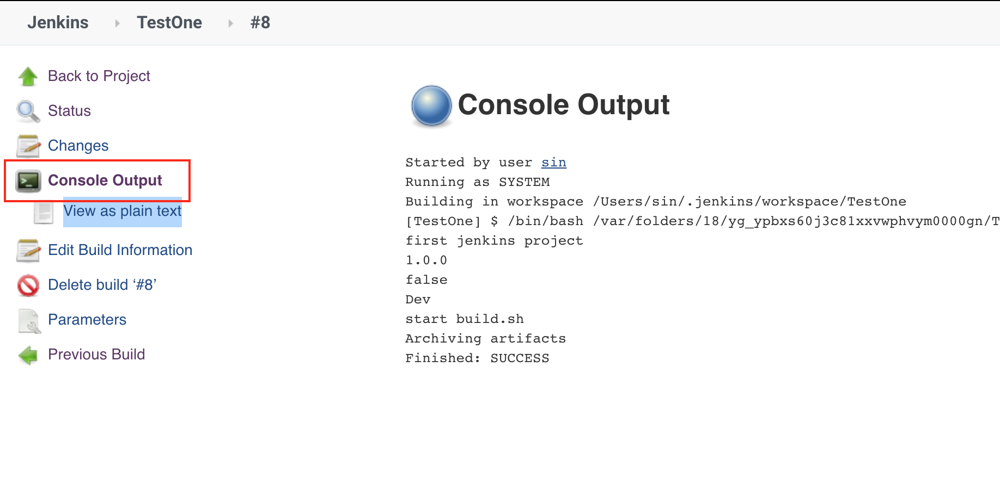
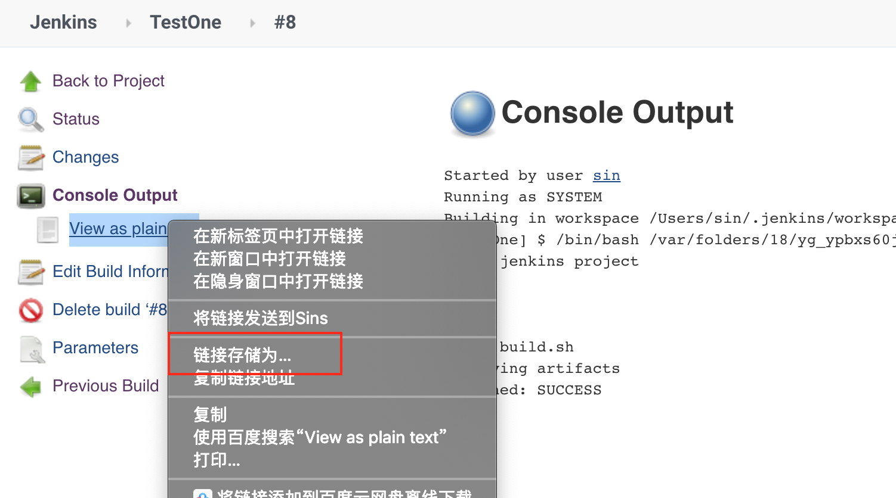

Jenkins 8.编译失败排查
顺利情况下，Jenkins 项目能正常编译，得到想要的结果，但是也会出现编译失败的，如何排查 Jenkins 编译失败的原因？
Jenkins 编译失败可能有以下原因
- 拉取远端代码失败
- 代码报错
- 代码分支不匹配
- Jenkins 所在电脑磁盘没有控件
- iOS 证书报错
- 编译脚本本身出错
查看 Jenkins 编译 log
通过 log 就可以分析出来问题原因
查看 log 时注意以下的关键字即可，这三个都代表了可能发生了失败
error
fail
failure
log 较少的情况下，可以通过 Console Output 来查看

log 较多，通过 Console Output 无法查看完整 log 时，可以下载 View as plain text 的内容，把 log 转成 txt 文件下载下来

通过 log 是可以分析出以上的失败原因的，但是分析 log 是个需要积累的过程，分析的多了，就能更快的定位问题